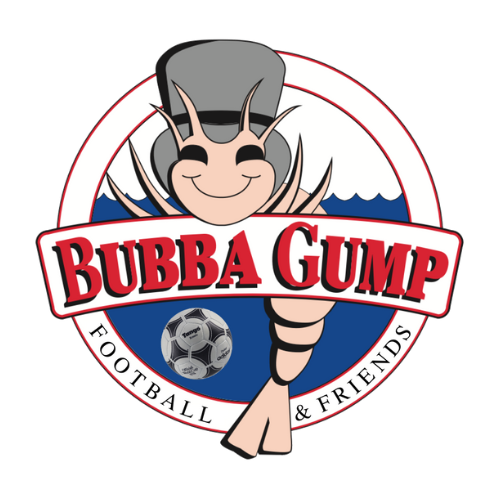

Bubba Gump FC
Bubba Gump FC es un equipo de futbol amateur en continua actividad y presencia en los torneos mas reconocidos de CABA y Gran Buenos Aires. Es un grupo amigable que estudia, trabaja, juega, viaja y se divierte. Fundado en 1995 por Ezequiel Cornejo y amigos, quienes decidieron armar un equipo y comenzar a competir de forma amateur en un torneo zonal. En 1996 se agregó el segundo capitán Juan Manuel Ríos, y este año es cuando comenzaron a convertirse en un equipo con una identidad propia. Esta historia comenzó con el apoyo de unos amigos que querían jugar de forma diferente al deporte que practicaban (fútbol). Bubba Gump comienza a reinventarse y no solamente dedicarse a jugar, sino a entrenar con objetivos de competir a primer nivel, cosa que lamentablemente con el transcurrir de los años no sucedió por diferentes motivos pero principalmente el económico, si bien tuvo ayuda de muchas marcas en el camino, nunca se logro establecer un regimen de alta competencia. Pero el espíritu de Bubba Gump, nunca se apago, la llama siguió ardiendo y de generación en generación se va pasando la pasión y el grupo generador de amigos y futbol hace que Bubba Gump FC nunca desaparezca. Siempre activo, siempre competitivo y reconocido en el ambiente amateur de CABA y Gran Buenos Aires, los mejores torneos albergaron su participación y también fueron testigos de sus logros, entre ellos, campeón zonal y regional 1998, 1999, 2004, 2007, 2009, 2010 y logrando su mejor racha en 2015, 2016, 2017 y 2018, luego se vino un parate obligatorio por la pandemia y en 2022 volvió a la competencia, con el mismo espíritu de siempre y como todos esperaban, con la llama intacta. Bubba Gump, futbol y amigos. "A los deportistas se les describe como personas que hacen las cosas a pesar de la adversidad y no porque las tienen fáciles." (B.Gump) Finalice con esta frase, porque entre todos, es así como Bubba Gump FC se lo merece.
 IR ARRIBA